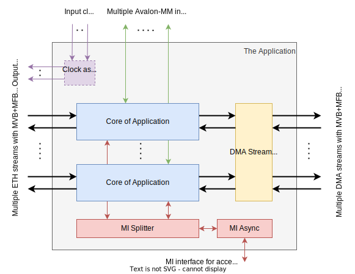

The Application
The NDK is designed for creating new network applications for packet processing in a deep pipeline. The NDK provides space for your application and defines several interfaces for communication with devices on the network, with software (control and data), or with external memory. We refer to this space in the NDK as the Application.
Depending on the selected FPGA card, there are several ETH streams for communication over an Ethernet network and several DMA streams for communication with the host CPU through the DMA module. There are also several Avalon-MM interfaces for access to external memory (typically DDR4) and an MI interface for access to the CSR implemented in the application. ETH and DMA streams use a combination of MFB (for packet data) and MVB (for packet headers and metadata) buses to transfer Ethernet packets. The Application allows you to assign the selected user clock to individual parts of the design. A typical connection of the Application is shown in the block diagram below:
{kind=link}
We recommend splitting the Application into several parts that we call Application cores. Typically, an Application core is instantiated for each Ethernet stream. Depending on the selected FPGA card, the number of ETH streams is equal to the number of DMA streams, or there are multiple ETH streams and only one DMA stream. For such cases, the NDK has prepared modules (see the Application implementation in NDK-APP-Minimal) to ensure that each Application Core is correctly connected to the available DMA interfaces. They also ensure proper distribution of the available DMA channels among the Application cores.
How to use the Application interfaces
The following sections describe how to work with each of the Application interfaces. You will also learn in which formats you can receive data and in which you must send it. We also strongly recommend that you read the MFB bus specification, MVB bus specification and MI bus specification. The MTU of packets transferred via DMA or Ethernet can be set using configuration parameters, see chapter “Configuration files and parameters”. The set MTU values are then available in the DeviceTree description of the NDK firmware.
Receiving packets from Ethernet
Ethernet packets enter the application over two buses (ETH_RX_*). The MVB bus carries the packet metadata, and the MFB bus carries the actual packet data. Both buses have independent flow control.
Warning
Even though the MVB and MFB buses are independent, data must be transferred over both of them. If they are not, for example, when one bus has the *_DST_RDY set permanently to 0, a buffer or a FIFO memory will fill up, and the data transfer will get stuck.
The packets are transferred as Ethernet frames without CRC. The eth_hdr_pack package defines the metadata format. The package is displayed below:
- PACKAGE eth_hdr_pack IS
RX Ethernet HDR items description:
Item bit range
Item name
Item description
0 to 15
LENGTH
Length of Ethernet frame in bytes
16 to 23
PORT
Source port/channel number in global format for the entire card; Examples: card with 2 ports each with 4 channels; third channel of the second port = 6; second channel of the first port = 1)
24 to 24
ERROR
Flag of global error, masked OR of all error bits
25 to 25
ERRORFRAME
Flag of frame error
26 to 26
ERRORMINTU
Flag of length below MINTU
27 to 27
ERRORMAXTU
Flag of length over MAXTU
28 to 28
ERRORCRC
Flag of CRC error
29 to 29
ERRORMAC
Flag of MAC error
30 to 30
BROADCAST
Flag of Broadcast MAC
31 to 31
MULTICAST
Flag of Multicast MAC
32 to 32
HITMACVLD
Flag of hit MAC address in TCAM memory
33 to 36
HITMAC
Index of hit MAC address in TCAM memory
37 to 37
TIMESTAMPVLD
Flag of valid timestamp
38 to 101
TIMESTAMP
Timestamp of frame (see TSU module docs for format description)
TX Ethernet HDR items description:
Item bit range
Item name
Item description
0 to 15
LENGTH
Length of Ethernet frame in bytes
16 to 23
PORT
Destination port/channel number in global format for the entire card; Examples: card with 2 ports each with 4 channels; third channel of the second port = 6; second channel of the first port = 1)
24 to 24
DISCARD
DRAFT ONLY: Discard frame before transmit to network
Transmitting packets to the Ethernet
The packets are sent to the Ethernet only through the MFB bus (ETH_TX_MFB_*). In this case, the metadata is transferred in a special signal: ETH_TX_MFB_HDR. This signal is valid for each MFB Region where an Ethernet packet starts. The packet data must contain an Ethernet frame without the CRC, which is calculated and inserted further in the design. The minimum allowed length of the packet data is 60B, if necessary, the application must add padding to the packet. The metadata format is also defined in the eth_hdr_pack package (see the previous section).
Receiving packets from the DMA module
The application receives packets from the DMA module over two buses, MVB and MFB (DMA_TX_*). As before, MVB carries the metadata, and MFB carries the actual packet data. Both buses have independent flow control.
Warning
Even though the MVB and MFB buses are independent, data must be transferred over both of them. If they are not, for example, when one bus has the *_DST_RDY set permanently to 0, a buffer or a FIFO memory will fill up, and the data transfer will get stuck.
The MVB metadata bus does not use a single MVB_DATA signal but multiple data signals instead:
MVB_LEN- the length of the packet in bytesMVB_HDR_META- metadata for the DMA header (see the format below)MVB_CHANNEL- the DMA channel number
The MFB bus transfers the packet data, which may contain a user header before the payload data (e.g., an Ethernet packet). You can determine the presence of the user header and its length from the metadata in the DMA_TX_MVB_HDR_META signal (see below).
The format of the metadata for the DMA header (DMA_TX_MVB_HDR_META):
Bit range |
Item name |
Item description |
|---|---|---|
0 to 7 |
HDR_LEN |
The size of the user header in bytes. HDR_LEN=0 means that the user header is not present in the packet. |
8 to 11 |
HDR_ID |
A 4-bit identification of the type/format of the user header, the definition of each HDR_ID value is application-specific. HDR_ID is referred to as “Packet specific flags” in the NDP API. |
Transmitting packets to the DMA module
The application sends packets to the DMA module over two buses, MVB and MFB (DMA_RX_*), which have the same roles as stated in previous sections. As before, MVB carries the metadata, and MFB carries the actual packet data. Again, the MVB bus does not use a single MVB_DATA signal but multiple data signals instead:
MVB_LEN- the length of the packet in bytesMVB_HDR_META- metadata for DMA header (see the format in the previous section)MVB_CHANNEL- the DMA channel numberMVB_DISCARD- A discard flag (the packet is discarded on the DMA input when you set this flag to 1)
The MFB bus transfers the packet data, which may contain a user header before the payload data (e.g., an Ethernet packet).
You can determine the presence of the user header and its length from the metadata in the DMA_RX_MVB_HDR_META signal (see the previous section).
The minimum allowed length of the packet data is 60B, if necessary, the application must add padding to the packet.
Warning
The application must also send the corresponding MVB data with each MFB packet, or the data transfer will get stuck.
Read/write access to the Application registers from SW
The application is typically controlled by a software tool. The NDK provides the nfb-bus tool and an API for generating read/write memory requests. These are transferred via the MI bus in the NDK firmware. This memory-oriented bus is wired throughout the NDK firmware, and each part, including the application, has its own allocated address space. You can find more about the MI and the available address space in the MI bus interconnect chapter.
The description of the components with a specific address space is implemented in the NDK using a DeviceTree. Also, the Application must have its own DeviceTree description, which can further refer to the internal components and their address spaces. It is a good idea to take inspiration from the NDK-APP-Minimal application DeviceTree file when creating a DeviceTree file for your application.
Ports and generics of the Application
In the tables below, you can see a detailed description of the Application interface, i.e., a description of all its generics and ports.
- ENTITY APPLICATION_CORE IS
- Generics
PortsGeneric
Type
Default
Description
ETH_STREAMS
natural
1
ETH: number of Ethernet streams from network module
ETH_CHANNELS
natural
1
ETH: number of possible logical Ethernet links per Ethernet stream
PCIE_ENDPOINTS
natural
1
Number of instantiated PCIe endpoints
DMA_STREAMS
natural
1
DMA: number of DMA streams
DMA_RX_CHANNELS
natural
16
DMA: number of RX channel per DMA stream
DMA_TX_CHANNELS
natural
16
DMA: number of TX channel per DMA stream
DMA_HDR_META_WIDTH
natural
12
DMA: size of User Header Metadata in bits
DMA_RX_FRAME_SIZE_MAX
natural
2**12
DMA: Maximum size of a frame on RX DMA interfaces (in bytes)
DMA_TX_FRAME_SIZE_MAX
natural
2**12
DMA: Maximum size of a frame on TX DMA interfaces (in bytes)
MFB_REGIONS
natural
1
MFB parameters: number of regions in word
MFB_REG_SIZE
natural
8
MFB parameters: number of blocks in region
MFB_BLOCK_SIZE
natural
8
MFB parameters: number of items in block
MFB_ITEM_WIDTH
natural
8
MFB parameters: width of one item in bits
HBM_PORTS
natural
1
HBM parameters: number of HBM ports
HBM_ADDR_WIDTH
natural
32
HBM parameters: width of AXI address signal
HBM_DATA_WIDTH
natural
256
HBM parameters: width of AXI data signal
HBM_BURST_WIDTH
natural
2
HBM parameters: width of AXI burst signal
HBM_ID_WIDTH
natural
6
HBM parameters: width of AXI ID signal
HBM_LEN_WIDTH
natural
4
HBM parameters: width of AXI LEN signal
HBM_SIZE_WIDTH
natural
3
HBM parameters: width of AXI size signal
HBM_RESP_WIDTH
natural
2
HBM parameters: width of AXI resp signal
MEM_PORTS
natural
1
MEM parameters: number of external memory ports (EMIFs)
MEM_ADDR_WIDTH
natural
27
MEM parameters: width of AVMM address signal
MEM_BURST_WIDTH
natural
7
MEM parameters: width of AVMM burst count signal
MEM_DATA_WIDTH
natural
512
MEM parameters: width of AVMM data signals
MEM_REFR_PERIOD_WIDTH
natural
32
MEM parameters: width of user refresh period
MEM_DEF_REFR_PERIOD
integer
0
MEM parameters: default refresh periods for each interface
AMM_FREQ_KHZ
integer
266660
Freq of the AMM bus with EMIF
MI_DATA_WIDTH
integer
32
MI parameters: width of data signals
MI_ADDR_WIDTH
integer
32
MI parameters: width of address signal
FPGA_ID_WIDTH
natural
64
Width of FPGA ID
RESET_WIDTH
integer
2
Width of reset signals
BOARD
string
UNDEFINED
Name of FPGA board
DEVICE
string
UNDEFINED
Name of FPGA device
Port
Type
Mode
Description
=====
USER CLOCK AND RESET INPUTS
=====
=====
CLK_USER
std_logic
in
user clock input
CLK_USER_X2
std_logic
in
user clock input with double frequency
CLK_USER_X3
std_logic
in
user clock input with triple frequency
CLK_USER_X4
std_logic
in
user clock input with quadruple frequency
RESET_USER
std_logic_vector(RESET_WIDTH-1 downto 0)
in
reset input synchronized with CLK_USER
RESET_USER_X2
std_logic_vector(RESET_WIDTH-1 downto 0)
in
reset input synchronized with CLK_USER_X2
RESET_USER_X3
std_logic_vector(RESET_WIDTH-1 downto 0)
in
reset input synchronized with CLK_USER_X3
RESET_USER_X4
std_logic_vector(RESET_WIDTH-1 downto 0)
in
reset input synchronized with CLK_USER_X4
=====
CLOCK AND RESET OUTPUTS (DEFINED BY APPLICATION)
=====
=====
MI_CLK
std_logic
out
clock output for MI interconnect
DMA_CLK
std_logic
out
clock output for DMA Module
DMA_CLK_X2
std_logic
out
clock output for DMA Module with double frequency
APP_CLK
std_logic
out
clock output for Application logic
MI_RESET
std_logic_vector(RESET_WIDTH-1 downto 0)
out
reset output synchronized with MI_CLK
DMA_RESET
std_logic_vector(RESET_WIDTH-1 downto 0)
out
reset output synchronized with DMA_CLK
DMA_RESET_X2
std_logic_vector(RESET_WIDTH-1 downto 0)
out
reset output synchronized with DMA_CLK_X2
APP_RESET
std_logic_vector(RESET_WIDTH-1 downto 0)
out
reset output synchronized with APP_CLK
=====
TIMESTAPS
=====
=====
TSU_CLK
std_logic
in
TSU clock input
TSU_RESET
std_logic
in
reset input synchronized with TSU_CLK
TSU_TS_NS
std_logic_vector(64-1 downto 0)
in
Timestamp from TSU in nanoseconds format
TSU_TS_VLD
std_logic
in
Timestamp valid flag
=====
STATUS INPUTS
=====
=====
PCIE_LINK_UP
std_logic_vector(PCIE_ENDPOINTS-1 downto 0)
in
Link Up flags of each PCIe endpoints, active when PCIe EP is ready for data transfers. DMA channels are statically and evenly mapped to all PCIe EPs (clocked at APP_CLK)
ETH_RX_LINK_UP
std_logic_vector(ETH_STREAMS*ETH_CHANNELS-1 downto 0)
in
RX Link Up flags of each Ethernet channel
ETH_TX_PHY_RDY
std_logic_vector(ETH_STREAMS*ETH_CHANNELS-1 downto 0)
in
TX PHY Ready flags of each Ethernet channel
FPGA_ID
std_logic_vector(FPGA_ID_WIDTH-1 downto 0)
in
Unique identification number of the FPGA chip (clocked at MI_CLK)
FPGA_ID_VLD
std_logic
in
=====
RX ETHERNET STREAMS (clocked at APP_CLK)
=====
MFB+MVB interface with incoming network packets Each data packet (MFB) must have an appropriate header (MVB)!
ETH_RX_MVB_DATA
std_logic_vector(ETH_STREAMS* MFB_REGIONS*ETH_RX_HDR_WIDTH-1 downto 0)
in
ETH RX MVB streams: data word with MVB items (ETH RX headers see eth_hdr_pack)
ETH_RX_MVB_VLD
std_logic_vector(ETH_STREAMS* MFB_REGIONS-1 downto 0)
in
ETH RX MVB streams: valid of each MVB item
ETH_RX_MVB_SRC_RDY
std_logic_vector(ETH_STREAMS-1 downto 0)
in
ETH RX MVB streams: source ready of each MVB bus
ETH_RX_MVB_DST_RDY
std_logic_vector(ETH_STREAMS-1 downto 0)
out
ETH RX MVB streams: destination ready of each MVB bus
ETH_RX_MFB_DATA
std_logic_vector(ETH_STREAMS* MFB_REGIONS*MFB_REG_SIZE*MFB_BLOCK_SIZE*MFB_ITEM_WIDTH-1 downto 0)
in
ETH RX MFB streams: data word with frames (packets)
ETH_RX_MFB_SOF
std_logic_vector(ETH_STREAMS* MFB_REGIONS-1 downto 0)
in
ETH RX MFB streams: Start Of Frame (SOF) flag for each MFB region
ETH_RX_MFB_EOF
std_logic_vector(ETH_STREAMS* MFB_REGIONS-1 downto 0)
in
ETH RX MFB streams: End Of Frame (EOF) flag for each MFB region
ETH_RX_MFB_SOF_POS
std_logic_vector(ETH_STREAMS* MFB_REGIONS*max(1,log2(MFB_REG_SIZE))-1 downto 0)
in
ETH RX MFB streams: SOF position for each MFB region in MFB blocks
ETH_RX_MFB_EOF_POS
std_logic_vector(ETH_STREAMS* MFB_REGIONS*max(1,log2(MFB_REG_SIZE*MFB_BLOCK_SIZE))-1 downto 0)
in
ETH RX MFB streams: EOF position for each MFB region in MFB items
ETH_RX_MFB_SRC_RDY
std_logic_vector(ETH_STREAMS-1 downto 0)
in
ETH RX MFB streams: source ready of each MFB bus
ETH_RX_MFB_DST_RDY
std_logic_vector(ETH_STREAMS-1 downto 0)
out
ETH RX MFB streams: destination ready of each MFB bus
=====
TX ETHERNET STREAMS (clocked at APP_CLK)
=====
MFB interface with outgoing network packets There is packet header the meta signal in MFB bus.
ETH_TX_MFB_DATA
std_logic_vector(ETH_STREAMS* MFB_REGIONS*MFB_REG_SIZE*MFB_BLOCK_SIZE*MFB_ITEM_WIDTH-1 downto 0)
out
ETH TX MFB streams: data word with frames (packets)
ETH_TX_MFB_HDR
std_logic_vector(ETH_STREAMS* MFB_REGIONS*ETH_TX_HDR_WIDTH-1 downto 0)
out
ETH TX MFB streams: header (see eth_hdr_pack) for each frame, is valid for each SOF
ETH_TX_MFB_SOF
std_logic_vector(ETH_STREAMS* MFB_REGIONS-1 downto 0)
out
ETH TX MFB streams: Start Of Frame (SOF) flag for each MFB region
ETH_TX_MFB_EOF
std_logic_vector(ETH_STREAMS* MFB_REGIONS-1 downto 0)
out
ETH TX MFB streams: End Of Frame (EOF) flag for each MFB region
ETH_TX_MFB_SOF_POS
std_logic_vector(ETH_STREAMS* MFB_REGIONS*max(1,log2(MFB_REG_SIZE))-1 downto 0)
out
ETH TX MFB streams: SOF position for each MFB region in MFB blocks
ETH_TX_MFB_EOF_POS
std_logic_vector(ETH_STREAMS* MFB_REGIONS*max(1,log2(MFB_REG_SIZE*MFB_BLOCK_SIZE))-1 downto 0)
out
ETH TX MFB streams: EOF position for each MFB region in MFB items
ETH_TX_MFB_SRC_RDY
std_logic_vector(ETH_STREAMS-1 downto 0)
out
ETH TX MFB streams: source ready of each MFB bus
ETH_TX_MFB_DST_RDY
std_logic_vector(ETH_STREAMS-1 downto 0)
in
ETH TX MFB streams: destination ready of each MFB bus
=====
RX DMA STREAMS (clocked at APP_CLK)
=====
MFB+MVB interfaces to DMA module (to software) Each data packet (MFB) must have an appropriate header (MVB)!
DMA_RX_MVB_LEN
std_logic_vector(DMA_STREAMS* MFB_REGIONS*log2(DMA_RX_FRAME_SIZE_MAX+1)-1 downto 0)
out
DMA RX MVB streams: length of data packet in bytes
DMA_RX_MVB_HDR_META
std_logic_vector(DMA_STREAMS* MFB_REGIONS*DMA_HDR_META_WIDTH-1 downto 0)
out
DMA RX MVB streams: user metadata for DMA header
DMA_RX_MVB_CHANNEL
std_logic_vector(DMA_STREAMS* MFB_REGIONS*log2(DMA_RX_CHANNELS)-1 downto 0)
out
DMA RX MVB streams: number of DMA channel
DMA_RX_MVB_DISCARD
std_logic_vector(DMA_STREAMS* MFB_REGIONS-1 downto 0)
out
DMA RX MVB streams: discard flag (when is set, packet is discarded in DMA module)
DMA_RX_MVB_VLD
std_logic_vector(DMA_STREAMS* MFB_REGIONS-1 downto 0)
out
DMA RX MVB streams: valid of each MVB item
DMA_RX_MVB_SRC_RDY
std_logic_vector(DMA_STREAMS-1 downto 0)
out
DMA RX MVB streams: source ready of each MVB bus
DMA_RX_MVB_DST_RDY
std_logic_vector(DMA_STREAMS-1 downto 0)
in
DMA RX MVB streams: destination ready of each MVB bus
DMA_RX_MFB_DATA
std_logic_vector(DMA_STREAMS* MFB_REGIONS*MFB_REG_SIZE*MFB_BLOCK_SIZE*MFB_ITEM_WIDTH-1 downto 0)
out
DMA RX MFB streams: data word with frames (packets)
DMA_RX_MFB_SOF
std_logic_vector(DMA_STREAMS* MFB_REGIONS-1 downto 0)
out
DMA RX MFB streams: Start Of Frame (SOF) flag for each MFB region
DMA_RX_MFB_EOF
std_logic_vector(DMA_STREAMS* MFB_REGIONS-1 downto 0)
out
DMA RX MFB streams: End Of Frame (EOF) flag for each MFB region
DMA_RX_MFB_SOF_POS
std_logic_vector(DMA_STREAMS* MFB_REGIONS*max(1,log2(MFB_REG_SIZE))-1 downto 0)
out
DMA RX MFB streams: SOF position for each MFB region in MFB blocks
DMA_RX_MFB_EOF_POS
std_logic_vector(DMA_STREAMS* MFB_REGIONS*max(1,log2(MFB_REG_SIZE*MFB_BLOCK_SIZE))-1 downto 0)
out
DMA RX MFB streams: EOF position for each MFB region in MFB items
DMA_RX_MFB_SRC_RDY
std_logic_vector(DMA_STREAMS-1 downto 0)
out
DMA RX MFB streams: source ready of each MFB bus
DMA_RX_MFB_DST_RDY
std_logic_vector(DMA_STREAMS-1 downto 0)
in
DMA RX MFB streams: destination ready of each MFB bus
=====
TX DMA STREAMS (clocked at APP_CLK)
=====
MFB+MVB interface from DMA module (from software) Each data packet (MFB) must have an appropriate header (MVB)!
DMA_TX_MVB_LEN
std_logic_vector(DMA_STREAMS* MFB_REGIONS*log2(DMA_TX_FRAME_SIZE_MAX+1)-1 downto 0)
in
DMA TX MVB streams: length of data packet in bytes
DMA_TX_MVB_HDR_META
std_logic_vector(DMA_STREAMS* MFB_REGIONS*DMA_HDR_META_WIDTH-1 downto 0)
in
DMA TX MVB streams: user metadata for DMA header
DMA_TX_MVB_CHANNEL
std_logic_vector(DMA_STREAMS* MFB_REGIONS*log2(DMA_TX_CHANNELS)-1 downto 0)
in
DMA TX MVB streams: number of DMA channel
DMA_TX_MVB_VLD
std_logic_vector(DMA_STREAMS* MFB_REGIONS-1 downto 0)
in
DMA TX MVB streams: valid of each MVB item
DMA_TX_MVB_SRC_RDY
std_logic_vector(DMA_STREAMS-1 downto 0)
in
DMA TX MVB streams: source ready of each MVB bus
DMA_TX_MVB_DST_RDY
std_logic_vector(DMA_STREAMS-1 downto 0)
out
DMA TX MVB streams: destination ready of each MVB bus
DMA_TX_MFB_DATA
std_logic_vector(DMA_STREAMS* MFB_REGIONS*MFB_REG_SIZE*MFB_BLOCK_SIZE*MFB_ITEM_WIDTH-1 downto 0)
in
DMA TX MFB streams: data word with frames (packets)
DMA_TX_MFB_SOF
std_logic_vector(DMA_STREAMS* MFB_REGIONS-1 downto 0)
in
DMA TX MFB streams: Start Of Frame (SOF) flag for each MFB region
DMA_TX_MFB_EOF
std_logic_vector(DMA_STREAMS* MFB_REGIONS-1 downto 0)
in
DMA TX MFB streams: End Of Frame (EOF) flag for each MFB region
DMA_TX_MFB_SOF_POS
std_logic_vector(DMA_STREAMS* MFB_REGIONS*max(1,log2(MFB_REG_SIZE))-1 downto 0)
in
DMA TX MFB streams: SOF position for each MFB region in MFB blocks
DMA_TX_MFB_EOF_POS
std_logic_vector(DMA_STREAMS* MFB_REGIONS*max(1,log2(MFB_REG_SIZE*MFB_BLOCK_SIZE))-1 downto 0)
in
DMA TX MFB streams: EOF position for each MFB region in MFB items
DMA_TX_MFB_SRC_RDY
std_logic_vector(DMA_STREAMS-1 downto 0)
in
DMA TX MFB streams: source ready of each MFB bus
DMA_TX_MFB_DST_RDY
std_logic_vector(DMA_STREAMS-1 downto 0)
out
DMA TX MFB streams: destination ready of each MFB bus
=====
Application specific signals
=====
=====
DMA_TX_USR_CHOKE_CHANS
std_logic_vector(DMA_STREAMS* DMA_TX_CHANNELS-1 downto 0)
out
Selectively pause (choke) a DMA channel(s) from Application. Can be used to avoid stopping the whole DMA Module when just a single channel is slacking behind.
=====
HBM AXI INTERFACES (clocked at HBM_CLK)
=====
=====
HBM_CLK
std_logic
in
HBM_RESET
std_logic
in
HBM_INIT_DONE
std_logic
in
HBM_AXI_ARADDR
slv_array_t(HBM_PORTS-1 downto 0)(HBM_ADDR_WIDTH-1 downto 0)
out
HBM_AXI_ARBURST
slv_array_t(HBM_PORTS-1 downto 0)(HBM_BURST_WIDTH-1 downto 0)
out
HBM_AXI_ARID
slv_array_t(HBM_PORTS-1 downto 0)(HBM_ID_WIDTH-1 downto 0)
out
HBM_AXI_ARLEN
slv_array_t(HBM_PORTS-1 downto 0)(HBM_LEN_WIDTH-1 downto 0)
out
HBM_AXI_ARSIZE
slv_array_t(HBM_PORTS-1 downto 0)(HBM_SIZE_WIDTH-1 downto 0)
out
HBM_AXI_ARVALID
std_logic_vector(HBM_PORTS-1 downto 0)
out
HBM_AXI_ARREADY
std_logic_vector(HBM_PORTS-1 downto 0)
in
HBM_AXI_RDATA
slv_array_t(HBM_PORTS-1 downto 0)(HBM_DATA_WIDTH-1 downto 0)
in
HBM_AXI_RDATA_PARITY
slv_array_t(HBM_PORTS-1 downto 0)((HBM_DATA_WIDTH/8)-1 downto 0)
in
HBM_AXI_RID
slv_array_t(HBM_PORTS-1 downto 0)(HBM_ID_WIDTH-1 downto 0)
in
HBM_AXI_RLAST
std_logic_vector(HBM_PORTS-1 downto 0)
in
HBM_AXI_RRESP
slv_array_t(HBM_PORTS-1 downto 0)(HBM_RESP_WIDTH-1 downto 0)
in
HBM_AXI_RVALID
std_logic_vector(HBM_PORTS-1 downto 0)
in
HBM_AXI_RREADY
std_logic_vector(HBM_PORTS-1 downto 0)
out
HBM_AXI_AWADDR
slv_array_t(HBM_PORTS-1 downto 0)(HBM_ADDR_WIDTH-1 downto 0)
out
HBM_AXI_AWBURST
slv_array_t(HBM_PORTS-1 downto 0)(HBM_BURST_WIDTH-1 downto 0)
out
HBM_AXI_AWID
slv_array_t(HBM_PORTS-1 downto 0)(HBM_ID_WIDTH-1 downto 0)
out
HBM_AXI_AWLEN
slv_array_t(HBM_PORTS-1 downto 0)(HBM_LEN_WIDTH-1 downto 0)
out
HBM_AXI_AWSIZE
slv_array_t(HBM_PORTS-1 downto 0)(HBM_SIZE_WIDTH-1 downto 0)
out
HBM_AXI_AWVALID
std_logic_vector(HBM_PORTS-1 downto 0)
out
HBM_AXI_AWREADY
std_logic_vector(HBM_PORTS-1 downto 0)
in
HBM_AXI_WDATA
slv_array_t(HBM_PORTS-1 downto 0)(HBM_DATA_WIDTH-1 downto 0)
out
HBM_AXI_WDATA_PARITY
slv_array_t(HBM_PORTS-1 downto 0)((HBM_DATA_WIDTH/8)-1 downto 0)
out
HBM_AXI_WLAST
std_logic_vector(HBM_PORTS-1 downto 0)
out
HBM_AXI_WSTRB
slv_array_t(HBM_PORTS-1 downto 0)((HBM_DATA_WIDTH/8)-1 downto 0)
out
HBM_AXI_WVALID
std_logic_vector(HBM_PORTS-1 downto 0)
out
HBM_AXI_WREADY
std_logic_vector(HBM_PORTS-1 downto 0)
in
HBM_AXI_BID
slv_array_t(HBM_PORTS-1 downto 0)(HBM_ID_WIDTH-1 downto 0)
in
HBM_AXI_BRESP
slv_array_t(HBM_PORTS-1 downto 0)(HBM_RESP_WIDTH-1 downto 0)
in
HBM_AXI_BVALID
std_logic_vector(HBM_PORTS-1 downto 0)
in
HBM_AXI_BREADY
std_logic_vector(HBM_PORTS-1 downto 0)
out
=====
EXTERNAL MEMORY INTERFACES (clocked at MEM_CLK)
=====
=====
MEM_CLK
std_logic_vector(MEM_PORTS-1 downto 0)
in
Clock for each memory port
MEM_RST
std_logic_vector(MEM_PORTS-1 downto 0)
in
Reset synchronized with MEM_CLK for each memory port
MEM_AVMM_READY
std_logic_vector(MEM_PORTS-1 downto 0)
in
MEM Avalon-MM: ready for request
MEM_AVMM_READ
std_logic_vector(MEM_PORTS-1 downto 0)
out
MEM Avalon-MM: read request
MEM_AVMM_WRITE
std_logic_vector(MEM_PORTS-1 downto 0)
out
MEM Avalon-MM: write request
MEM_AVMM_ADDRESS
slv_array_t(MEM_PORTS-1 downto 0)(MEM_ADDR_WIDTH-1 downto 0)
out
MEM Avalon-MM: address of r/w request
MEM_AVMM_BURSTCOUNT
slv_array_t(MEM_PORTS-1 downto 0)(MEM_BURST_WIDTH-1 downto 0)
out
MEM Avalon-MM: burst count of read/write request
MEM_AVMM_WRITEDATA
slv_array_t(MEM_PORTS-1 downto 0)(MEM_DATA_WIDTH-1 downto 0)
out
MEM Avalon-MM: write data, valid only with write request
MEM_AVMM_READDATA
slv_array_t(MEM_PORTS-1 downto 0)(MEM_DATA_WIDTH-1 downto 0)
in
MEM Avalon-MM: read data
MEM_AVMM_READDATAVALID
std_logic_vector(MEM_PORTS-1 downto 0)
in
MEM Avalon-MM: read data valid flag
MEM_REFR_PERIOD
slv_array_t(MEM_PORTS-1 downto 0)(MEM_REFR_PERIOD_WIDTH - 1 downto 0)
out
MEM parameter: user refresh period
MEM_REFR_REQ
std_logic_vector(MEM_PORTS - 1 downto 0)
out
MEM parameter: user refresh request
MEM_REFR_ACK
std_logic_vector(MEM_PORTS - 1 downto 0)
in
MEM parameter: user refresh ack
EMIF_RST_REQ
std_logic_vector(MEM_PORTS-1 downto 0)
out
EMIF local reset request
EMIF_RST_DONE
std_logic_vector(MEM_PORTS-1 downto 0)
in
EMIF local reset done flag
EMIF_ECC_USR_INT
std_logic_vector(MEM_PORTS-1 downto 0)
in
EMIF ECC user interupt flag
EMIF_CAL_SUCCESS
std_logic_vector(MEM_PORTS-1 downto 0)
in
EMIF calibration success flag
EMIF_CAL_FAIL
std_logic_vector(MEM_PORTS-1 downto 0)
in
EMIF calibration fail flag
EMIF_AUTO_PRECHARGE
std_logic_vector(MEM_PORTS-1 downto 0)
out
EMIF auto precharge request
=====
MI INTERFACE (clocked at MI_CLK)
=====
=====
MI_DWR
std_logic_vector(MI_DATA_WIDTH-1 downto 0)
in
MI bus: data from master to slave (write data)
MI_ADDR
std_logic_vector(MI_ADDR_WIDTH-1 downto 0)
in
MI bus: slave address
MI_BE
std_logic_vector(MI_DATA_WIDTH/8-1 downto 0)
in
MI bus: byte enable
MI_RD
std_logic
in
MI bus: read request
MI_WR
std_logic
in
MI bus: write request
MI_ARDY
std_logic
out
MI bus: ready of slave module
MI_DRD
std_logic_vector(MI_DATA_WIDTH-1 downto 0)
out
MI bus: data from slave to master (read data)
MI_DRDY
std_logic
out
MI bus: valid of MI_DRD data signal